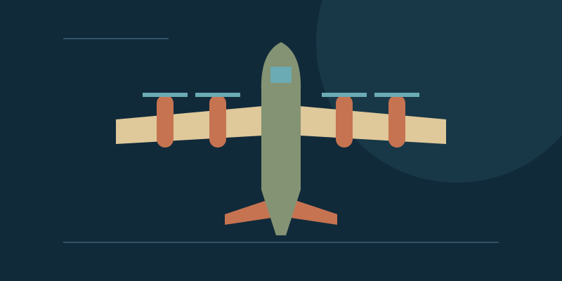

P-51 Mustang
World War II · Fighter escort
A long-range fighter helped protect bomber formations on missions deep into Europe.
Aviation
Explore fighter escort, heavy bombing, tactical transport, and reconnaissance through four aircraft.
Explore fighter escort, heavy bombing, tactical transport, and reconnaissance through four aircraft. Choose from the four subjects below.
Choose a subject for its history, distinguishing features, sources, and links to related pages.
World War II · Fighter escort
A long-range fighter helped protect bomber formations on missions deep into Europe.

World War II · Heavy bomber
A four-engine bomber became central to the American daylight bombing campaign.

Tactical airlift · Transport and relief
A versatile cargo aircraft brings people and equipment to demanding destinations.

Cold War · Strategic reconnaissance
A specialized aircraft used exceptional speed and altitude to gather intelligence.